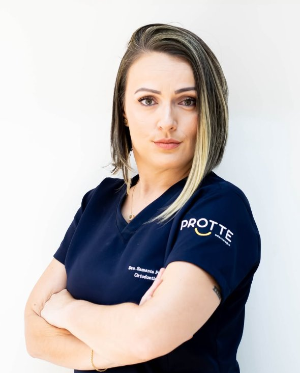

Ortodontia · Tatuapé, São Paulo
Seu sorriso alinhado,
com quem é especialista.
Sou a Dra. Samanta Protte, especialista em Ortodontia. Planejo cada tratamento, de alinhadores invisíveis ao preparo para cirurgia ortognática, e acompanho você em todas as consultas.
- Especialistaem Ortodontia
- Referênciaem alinhadores SouSmile
- TatuapéZona Leste de SP

Tratamentos
Ortodontia completa, do primeiro escaneamento à contenção.
-
01
Alinhadores invisíveis
Placas transparentes trocadas a cada etapa. Você tira para comer e escovar, e quase ninguém percebe que está em tratamento.
Como funciona -
02
Aparelho ortodôntico
Aparelho fixo, metálico ou estético, indicado quando o caso pede mais controle sobre cada dente.
Agendar avaliação -
03
Preparo para cirurgia ortognática
Alinho os dentes antes e depois da cirurgia, trabalhando junto com o cirurgião bucomaxilofacial para que a mordida encaixe no final.
Agendar avaliação -
04
Planejamento digital
Escaneamento e simulação do resultado antes de começar. Você vê o movimento previsto e o tempo estimado do tratamento.
Ver as etapas -
05
Contenção e acompanhamento
Depois do tratamento, a contenção mantém os dentes no lugar. As consultas de revisão garantem que o sorriso continue alinhado.
Tirar dúvidas
01 / 05
Alinhadores invisíveis
Do escaneamento ao sorriso alinhado, em quatro etapas.
Sou referência em alinhadores SouSmile. Você recebe as placas, troca de etapa em casa e volta ao consultório para eu acompanhar cada movimento.
Pela plataforma SouSmile, direto do celular.
-
Etapa 1
Avaliação
Conversamos sobre o que incomoda no seu sorriso. Eu examino mordida, gengiva e articulação e digo se o alinhador é indicado para o seu caso.
-
Etapa 2
Escaneamento e planejamento
Um escaneamento digital substitui a moldagem com massa. A partir dele eu planejo cada movimento e mostro a simulação do resultado.
-
Etapa 3
Uso das placas
Você usa os alinhadores cerca de 22 horas por dia e troca de placa conforme o planejamento, com revisões periódicas no consultório.
-
Etapa 4
Contenção
Com os dentes na posição final, a contenção mantém o resultado. Seguimos com consultas de acompanhamento.

A doutora
Ortodontia é o que eu faço todos os dias.
Sou especialista em Ortodontia e atendo no Tatuapé, na Zona Leste de São Paulo. No consultório da Protte Odonto, eu mesma faço o planejamento de cada caso e acompanho o paciente do primeiro escaneamento até a contenção.
Trabalho com alinhadores invisíveis, aparelhos ortodônticos e preparo para cirurgia ortognática, sempre explicando com clareza o que vamos fazer e por quê.
- Especialidade
- Ortodontia
- Alinhadores
- Referência SouSmile
- Cirurgia
- Preparo ortognático
- Registro
- RT CROSP 114427 · CRO CL 02289
Dúvidas frequentes
Antes de começar.
Não encontrou sua dúvida? Mande uma mensagem pelo Instagram ou pelo link de agendamento.
Alinhador invisível serve para qualquer caso?
Funciona para boa parte dos casos de dentes tortos, espaçados ou apinhados, mas não para todos. Na avaliação eu examino a mordida e digo se ele é a melhor opção para você ou se o aparelho fixo atende melhor.
Como funciona a pré-avaliação virtual?
É o primeiro passo online para quem quer saber se o alinhador SouSmile combina com o seu caso. Você faz o agendamento pela página da SouSmile, e a avaliação clínica completa acontece depois, aqui no consultório.
Quanto tempo dura o tratamento?
Depende da complexidade do caso. Casos simples levam alguns meses e casos mais complexos, mais tempo. No planejamento digital você já sai com uma estimativa para o seu caso.
O alinhador dói?
É comum sentir uma pressão leve nos primeiros dias de cada placa nova. É o sinal de que os dentes estão se movendo, e o desconforto passa em pouco tempo.
Posso comer normalmente?
Sim. Você tira o alinhador para comer e beber qualquer coisa que não seja água, escova os dentes e coloca de volta.
O que é o preparo para cirurgia ortognática?
Quando a mordida depende de um ajuste na posição dos ossos da face, o tratamento ortodôntico prepara os dentes antes da cirurgia e finaliza o encaixe depois. Eu conduzo essa parte junto com o cirurgião bucomaxilofacial.
Agende sua avaliação
O primeiro passo é uma conversa.
Escolha o melhor canal e marque um horário no consultório do Tatuapé.
- Tatuapé · São Paulo, SP
- @protteodonto
- linktr.ee/protteodonto